Back to No animation.
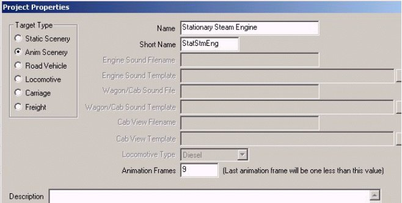
To add animation, go to Project Properties in the File menu.
Choose Anim Scenery which is TSM’s name for a Complex Shape in the scenery department. Pick a long name and a short name for the project.
Notice the Box Animation Frames down toward the bottom.
Until you chose Anim Scenery it showed a grayed out (0), and the line says: (Last animation frame will be one less than this value). If we are going to have 8 animation frames, then we need to stick in 9. But later, when we are setting up the frames, the numbering scheme starts with 0 and goes to 8. 0 through 8 frames = 9, which is somehow inconsistent with the last animation frame being one less than 9. However, the 0 frame and the end frame are identical, which I am told causes the animation to loop into a repetitive string. But logic aside, if you are going to have 8 frames, put in 9; and if you are going to have 16,put in 17. There is no need to use a bunch of un-necessary animation, and TSM and MSTS seem to fill in the gaps, and it really looks lifelike and smooth.
If you were doing a Water Tank spout, you would use only 3 frames; 0 and 2 being the same, and being the initial up position, and 1 being the down position. Yet when played in the Sim, all looks well and works slowly. And we haven’t really gotten to frames yet anyway. But we will very shortly.
Now, if you were to go back to F2 it would still show No animation, but the Ani button at the top toolbar will now work. Anyway, we have now joined the Crankpin to the Flywheel, and they are both the same color. The next item of business is to select the Flywheel, if it is not already selected.
After that, click the “Ani” button at the top. Make sure the Flywheel is positioned with the Crankpin down at 6 o’clock. You will do this by pushing the Rotate button, and with the X and Y buttons up, and the Z axis button constrained, and using the mouse to make the Flywheel rotate about the Z axis.
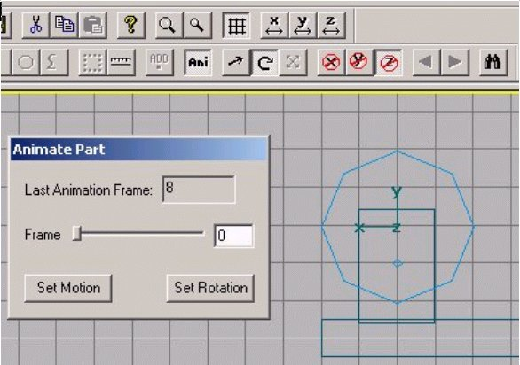
Now look at the Animate Part pane. Even though you set 9 in the Part Properties pane, the Animate Part pane shows 8 as the Last Animation Frame. And we are currently in Frame 0. Think for a moment about what we are going to do. We are going to rotate the Flywheel. So, for this part we will only be using the Set Rotation button.
Remember that the initial (0) and last (8) frames will be in the same place. You simply slide (actually click) the rectangular button over to the far right to get to the last (8) frame. So, while you are in Frame 0, click the Set Rotation button. Then slide the Slider button over to the far right so that you are in Frame 8, and look at the Flywheel. It should be in the same position as it was in Frame 0, and if so click the Set Rotation button again. If it is not, then use the Rotate tool, with Z axis constrained, and your mouse to rotate the Flywheel so that it is, and click Set Rotation.
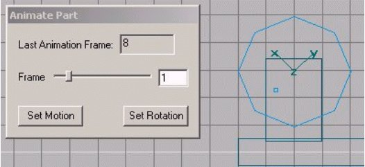
Next, move the Slider back to the left until you arrive at Frame 1. Use the Rotate tool to rotate the Flywheel 45 degrees clockwise. Cleverly, you have an octagon for a Flywheel, so the next set of points will be lined up with the Y grid axis, which goes through the center of the Flywheel. Click the Set Rotation button again. Now you can try out your handiwork. Move the Slider back to 0 and the Flywheel should rotate back to the starting position. Move it to 8, and it should rotate through the 1 position and then back to the 8 position, which is the same as the 0 position. Do the same sort of things for Frames 2 – 7, and we are through animating the Flywheel.
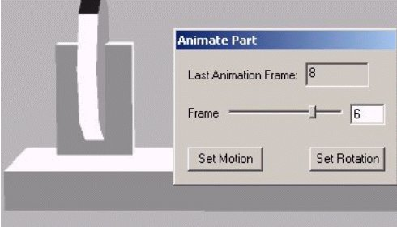
But suppose something goes wrong (and it nearly always does) and the Flywheel doesn’t want to follow your instructions, and goes off on a spin of its own, as here. What to do?
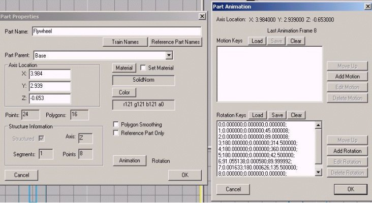
We need to go back to Part Properties F2, and look at what we now have. Note that beside the Animation button, it now says Rotation. Click the Animation button, and up comes the Part Animation pane. There is data in the Rotation Keys box, but none in the Motion Keys box, and this is how it should be. And note the data doesn’t look right in the Rotation Keys. The first item is the data for Frame 0, and it is divided into three sections, namely degree data for the X, Y, and Z axes. Frames 0 and 8 are identical and look fine. The only rotation should be about the Z axis, not X and Y. Frame 1 shows 45 degrees rotation about the Z axis, and Frame 2 shows 90 degrees (well actually 89, which we can correct, as below), and that is what you were trying to do. But all the rest have problems, because there is data in the X and Y axes, and there should be none.
For example, look at Frame 3, and you will see 180 in the X axis, and there should be only a 0 there. Further, the Z progression in degrees is not correct, because of the jump from 90 (or 89) to 314. So, you have two choices. You can delete all the data for all Frames by clicking the Clear button, which is worth a try, and doing the exercise over again. Or, you can correct the erroneous Frames. Since you already know how to start the animation over again, let’s try the correction route.
The first thing to do is move the animation Slider back to Frame 0. Then click the Ani button to close the Animate Part pane. If you don’t, the changes you are about to make may not stick.
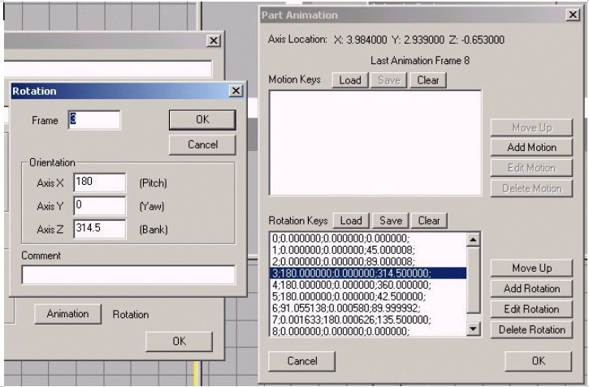
In the Part Animation pane, click on the line for Frame 3 to select it, which currently shows 180 degrees of rotation in the X axis, and 314 degrees in the Z axis. Then click on the Edit Rotation button and up comes a new pane called Rotation. Indeed, it shows the same erroneous 180 in the X axis, as well as the erroneous 314+ degrees in the Z axis. So, simply delete the degrees in the X axis, and make it 0. And change the Z axis to the proper number. Now we are rotating each frame by 45 degrees, and Frame 2 was at 90 degrees, so Frame 3 in the Z axis should be 135 degrees. Change it accordingly, and press OK to save the new data.
Then go back to Frame 2 and change the 89 to 90 if you want.
Get out your adding machine (or thinking cap), and figure out what each of the other Frames should read in the Z axis, and make the corrections as needed.
Why do these things happen? Why does it sometimes rain?
I think that TSM gets loaded down with data, and can’t make the computations correctly. It has also been my experience that you must progress through the animation data input in numerical order, at least for rotation items. But sometimes not. It may also help to close other Programs that may be open, and also to save, and perhaps close and reopen the TSM file fairly regularly. Anyway, you know how to fix it, so do it now. Proper data is shown below.
This what the corrected Rotation Keys data for the Flywheel should look like after you are done editing all of the entries:
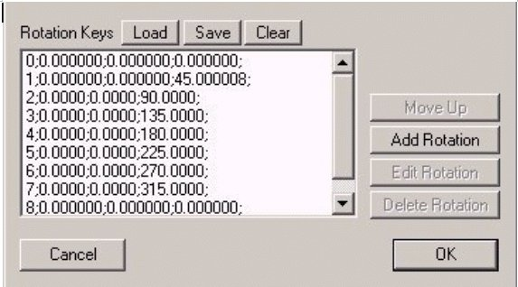
In this image you can clearly see the data for each of the 8 Frames, and also discern the three parameters. I see there is still a slight error in Frame 1, and you can fix it if you wish. Now, again run the Ani button slider, and see if everything rotates properly.
To digress even further, I think the clue to all rotation key data in TSM is to save after each entry is made. I have prepared correct .rot files for each axis, and have still had problems making the rotation keys data stick when animating parts. The only way I can make TSM behave is to enter one or two keys worth of data, and then save the whole file, before entering any further data.
I have prepared several .rot files for you, one in each of the three axes, and some going clockwise and some counterclockwise. I have finally been able to animate three wheels, one in each of the three axes, and have all 3 rotate properly, in various directions, at the same time. These .rot files are available in ZIP form by clicking here. The structure is that the first letter is the axis of rotation, the second is the number of frames, and the third is either clockwise or counterclockwise, e.g. x8cw.rot.
You may place these files in your TSM Folder Abacus\TSModeler\Resources and use them for further projects that involve rotation. Simply use the Load button to bring them up. You should also either remove the .rot file that came with TSM, or else correct it so that Frame 0 and Frame 8 are identical, which means change the 360 in Frame 8 to a 0.
Let us now construct and animate the Connecting Rod. Using the Box tool, lets make a Rod that is 5 feet in width, 0.3 deep, and 0.3 high. The first thing to do is move the axis from the center to the left end where it will mate with the Crankpin. So, activate the Move tool, constrain Y and Z, and hold down SHIFT while you move the part axis to the end. After you have shifted the axis to the left end in the front view, look at the side view, and move the Rod out so it clears the Flywheel. Now, back to the front view, constrain just Z, and move the Rod with its shifted axis over the Crankpin. Then use the Rotate tool, constrain Z, and rotate the right end so that it rests on the grid line that goes through the horizontal center of the Flywheel.
Change the name in F2 from tube to Connecting Rod, and change the parent to Base. It looks like this:
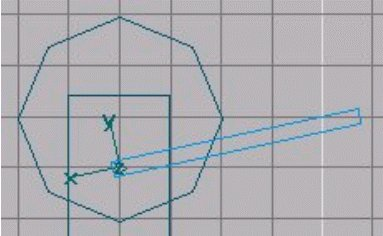
We will use the horizontal grid line for placing the right end of the Rod, and the Crankpin for the left end as we proceed with animation. Since the entire project is animated scenery in Part Properties, we need to do nothing further, except to use the Ani button and Animate Part pane to set the motion. The position shown will be the initial and last positions, which will handle Frames 0 and 8, just as in the case of the Flywheel. The only difference is that we will need to click both the Set Rotation and Set Motion buttons for each frame.
So, make sure the Rod is selected, and push the Ani button, and see that the Connecting Rod and Flywheel are in the above positions in Frame 0. If not, make adjustments. Then click both the Set Rotation and Set Motion buttons. Next, move the Slider to the far right, to Frame 8 and do the same things. Then go back to Frame 0 and press F2 and then the Animation button, and look at the data. The Frames for the two Keys should be the same. If not, straighten it out now, as explained for the Flywheel.
Now we will go on to the setting for Frame 1, which should follow intuitively from the prior instructions. But if not, you should move the Slider in the Animate Part pane to Frame 1. Then, using the Move tool, and constraining Z, move the axis of the Rod to the center of the Crankpin. Then using the Rotate tool, and again constraining Z, rotate the Rod till the right end is centered on the grid line of the center of the Flywheel, and then click Set Motion and Set Rotation. Do this all the way through Frame 7, as you have already done Frame 8. Now you can check your work, as you have done before for the Flywheel, by clicking the Ani button, and moving the Slider back and forth. And problem solving is identical as before. If there are any, look for abnormalities in the Part Animation pane.
The illustration below is Frame 7 of the Connecting Rod. It shows how the Rod has been manipulated to place the left end over the Crankpin of the Flywheel, and the right end in line with the horizontal axis of the center of the Flywheel, on the grid line. When in place the Set Motion and Set Rotation buttons are both clicked.
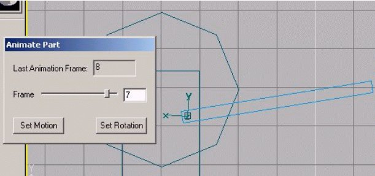
Now we move on to the next part in the chain, the Crosshead. This is a simple block in this tutorial, and I include a simple removable Pin in the center, just to help line up the parts. This part only slides linearly back and forth along the X axis, so we will only be using the Set Motion button, as there is no rotation of the Crosshead.
Again go to the Box tool, and pick a shape that is 1 foot wide, 1 foot high, and 0.8 deep. Manipulate the Crosshead until it is centered on the horizontal grid line from the center of the Flywheel, in both the Front and Side views. Then add a simple Crosshead Pin in the Z axis in the middle of the Crosshead, such as a tube of 0.1 Radius, 0.9 Length, closed at both ends, and structured along the Z axis. After it is placed, as with the Crankpin, it needs to be joined to the moving part, so follow the same selection and joining process, with the Crosshead being selected last. Also go to F2, Part Properties, and change the name of the box to Crosshead, with the Part Parent being Base.
Now is the time to animate the Crosshead. So, once again select the Crosshead, and note that you will constrain it in both the Y and Z axes, because it only moves back and forth along the X axis. After it is properly placed for the initial starting position, which is Frame 0, you will need to only click the Set Motion button. And as before, you will move the Slider to the Frame 8 position, and after making certain everything is in the proper position, you will click the Set Motion button again.
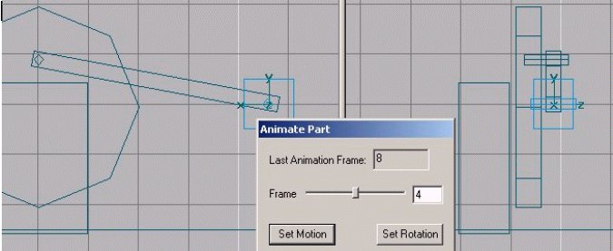
Here we have the Crosshead with fused Crosshead Pin in Frame 4. So far as the Crosshead is concerned, it is in the same position in Frames 0, 8, and 4. The other Frames will require sliding the Crosshead back and forth along the X axis only, so attend to these animation details. Note that the Crosshead is in the same position in Frames 1 and 3, and likewise in Frames 5 and 7. I have had no difficulty in using the Set Motion button in no particular order. When you are done, move the Animation Part Frame back to 0, and get out on Ani. Then check your work as before by going to F2, Animation Button, and looking over the Part Animation pane to see that the Motion Keys and Rotation Keys data looks correct. Again you should see nothing changing in the Y and Z axes for each Frame, and if you have inadvertently made an entry or two in the Rotation Keys for the Crosshead, simply Clear that area of data.
The last part to animate is the Piston Rod. So, go to the Tube tool, and let's pick a Radius of 0.1, and a length of 3 feet, with the Rod being open at both ends, and having 4 or 6 points and only 1 section. Structure it along the X axis, as that is where it slides back and forth. Place it along the same grid line as the horizontal center of the Flywheel, and Crosshead. It will be placed slightly inset into the Crosshead so that there is no need for a left poly or texture, and the right end will be hidden in the Cylinder, so it also needs no poly or texture. Check Polygon Smoothing to make it round, name it Piston Rod, and its parent will also be the Base.
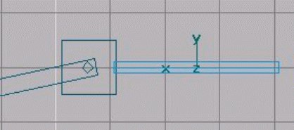
Now you will animate the Piston Rod in an identical manner to the Crosshead, as all it does is slide back and forth, linearly on the X axis. You will only be using the Set Motion button.
Now it is time to make the remaining static, un-animated parts of the Stationary Engine. These are pretty simple to finish up your project.
Probably the easy thing to make is the Cylinder. Use the Tube tool and make one with a Radius of 1.25, length of 3 feet, closed on both ends, 8 or 10 points, and 1 section, formed along the X axis. Using your Ani button see where the Crosshead is in its extreme right position, which should be Frame 6. Put the left end of the cylinder a couple of inches from there with the central axis of the Cylinder being concentric with the Piston Rod. Sometimes the Cylinder will jump around as the animation is cycled, so just get a general location for it, and then make the final placement after you are out of the animation mode.
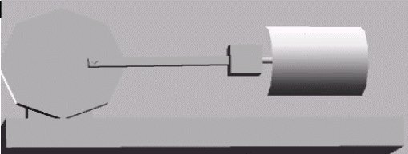
Name it Cylinder, and use the Base as the Parent. Check Polygon Smoothing. This is generally what it should look like in the perspective view, in Frame 6.
Next up are the Upper and Lower Slides for the Crosshead and a support for the Cylinder. For the Upper Slide, go to the Box tool, and create a Slide that is 3.2 wide, 0.3 high, and 1 deep. Then use the Move tool to place it above the Crosshead, and slightly sunken into the Cylinder head. It should be centered above the Piston Rod.
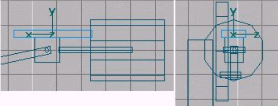
After it is in place, go to F2 and name it Slide, Upper and make its part parent Base.
Now for the Lower Slide, we will copy and paste. While the Upper Slide is selected go to the Edit menu, and click Copy. Then click Paste. The new part is covering up the earlier one, so use the Move tool, constrain X and Z, and move the pasted Slide down in the Y axis until it is placed under the Crosshead. Rename it Slide, Lower with parent as Base.
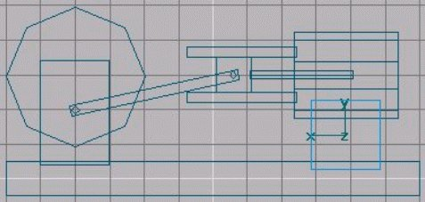
The final part is a Support for the Cylinder. Again use the Box tool, and create a Support that is 2 wide, 1.3 or so deep, and 2 high. Center it under the Cylinder, so that it is buried in both the Base and the Cylinder, and name it Support with Base as parent.
Now you are done making parts, and it is time to begin cleaning up the parts so that we can texture the Stationary Engine. Here you will see why we have buried certain parts within other parts. The answer is so that we can avoid having to texture things we can not see. If we can not see a surface, we can probably just eliminate the surface in order to reduce the number of polys in the Object, and thus reduce the load on the Sim engine, to ultimately speed up the frame rate.
Go through the parts one by one and check in F2 to make certain that each part has a name and a parent, except the Base.
Then look at each part to see if there are any surfaces that will not be seen, and can thus be eliminated.
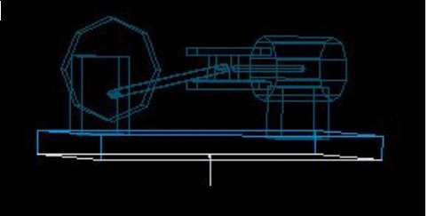
So, lets start with the Base. Select the Base and go into poly mode, and change the view to Outline, as opposed to Solid. Then use the N key to cycle through all the polys to determine if any will be hidden. And you will find that the bottom of the Base is pointing into the ground when in the Sim, and thus will never be seen. So, with that normal or poly highlighted (as above) it can be eliminated simply by hitting Delete.
The same can be done for many of the other parts, such as the bottom of the Stand, the ends of the Slides that are buried in the Cylinder, and both the top and bottom of the Support. Also the right end of the Connecting Rod is buried in the Crosshead. And if you wish, you can eliminate the Crankpin polys and the Crosshead Pin polys, as well. If you leave them in, remove the poly on the end of the Crankpin that is buried inside the Flywheel.
However, if you eliminate one poly too many, it is difficult to get it back, so exercise caution.